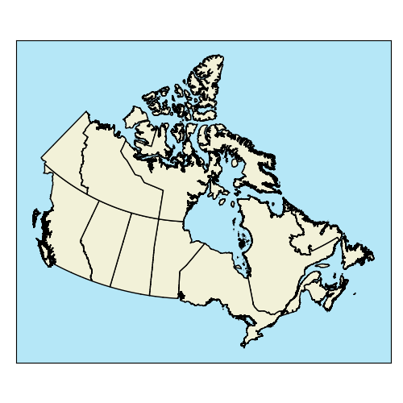

What is Data?
Data is information describing some phenomenon.
What is a Phenomenon?
Phenomenon: a fact or situation that is observed to exist or happen, especially one whose cause or explanation is in question.
- A lightning strike
- A coastline
- A country
- A dog on a kayak!
- Anything and everything are phenomena!


Types of Phenomena
Discrete Objects
Distinct boundaries
Chat can be exactly measured
Finite
They are countable and cannot be infinitely subdivided
Continuous Fields
No distinct boundaries
Everywhere has a value
Infinitely divisible
They are not countable and can be infinitely subdivided
Types of Phenomena
When is a phenomenon discrete or continuous?
- To an extent, it depends on our perspective and the scale of our analysis.
- Many phenomenon are a bit of both.
Lightning
A strike is a discrete object
What about a lighting bolt …?
Doesn’t really have clearly defined boundaries?
Sort of continuous
Strike frequency is a continuous field
Everywhere has a frequency of lighting strikes
Even the absence of lighting strikes, is still a frequency of strikes

A Coastline
Continuous field at large scale
Tides & waves
Where is the exact boundary?
Discrete object at small scale
Zoom out and the tides/waves don’t really matter
Its easy to draw a static boundary
Unless you change the time scale
Until you start thinking about the long term :(
Types of Phenomena
Most things don’t fall perfectly into one category or the other.
- That said, it is a helpful framework as long as we recognize the discrete vs. continuous dichotomy is not a perfect classification
TopHat Question 1
Discrete objects: (select all that apply)
- Are countable
- Do not have distinct boundaries
- Are infinitely divisible
- Have well defined boundaries
Discrete Objects
Buildings are a great example.
- Concrete boundaries
- Countable
- Real physical object
Discrete Objects
Political Boundaries are also a great example.
- Distinct boundaries
- Countable
- Not a physical object
Continuous Fields
Elevation is a great example.
- Everywhere on Earth
- No “number of elevations”
- A physical property
Continuous Fields
Density of tweets is also a great example.
Everywhere has this too
Derived from something countable
But not countable itself
Not a physical property
Working Together
Frequently we’ll end up working with both discrete objects and continuous fields.
In Module 1, you worked with:
Cholera deaths (Discrete objects)
Kernel density (continuous field)
We use spatial data models to represent information in a GIS
Vector Data Model = discrete objects
Raster Data Model = continuous fields
Digital information
We’ll talk more about spatial data models later. For now, lets think about data more broadly. How do we represent data in a computer?
- Digital information is represented as bits (0’s and 1’s)
- We typically quantify data as bytes (8 bits):
- Kilobyte (kB) = 1,000 bytes
- Megabyte (MB) = 1,000,000 bytes
- Gigabyte (GB) = 1,000,000,000 bytes
Digital information
There are numerous ways to translate human readable data to binary, such as ASCII.
- Each character is represented as one byte
- There are 28 = 256 unique combinations of 0’s and 1’s in a byte
- Some examples:
- “A” : 01000001
- “CAT”: 01000011 01000001 01010100
- “31”: 00110011 00110001
Digital Information
Modern computers use 64-bit “architecture”. That is, the central processing unit (CPU) can handle 64 bits (8 bytes) of information at a time.
“Word” length is 64 bits
A “Word” is a unit of data
i.e., an individual piece of information
264 possible unique values
18 quintillion possible unique combinations of 1’s and 0’s to describe something
CPUs can be stacked in parallel to handle more information at one time
Representing Phenomena in GIS
Within the context of a GIS, every piece of information describing a phenomenon is referred to as an Attribute.
- Broadly speaking each attribute can address one of three questions:
- Where?
- What?
- When?
Types of Attributes
There are multiple ways to classify/think about attributes. One important distinction we must make
- Non-Spatial Attributes: describe what or when
- Spatial Attributes: describe where
- Puts the Geographic in GIS
- Requires some special considerations
- We have already talked a bit about these consideration (map projections)
- We’ll discuss more considerations in the next module
Types of Attributes
All data (attributes), spatial and non-spatial, can be either qualitative or quantitative.
- The types of analysis we can do with qualitative data are more limited
- That does not make quantitative data “better”
- Measurement scales: both qualitative and quantitative can be measured on different scales
- Qualitative: Nominal or Ordinal Sales
- Quantitative: Interval or Ratio Sales
Qualitative Data
Qualitative data is Categorical. It is strictly descriptive and lacks any meaningful numeric value.
Textual, coded numerals, pictures, sounds, etc
Typically working with textual & coded numerals most frequently in GIS
Limited number of computational options, often requires careful consideration when analyzing
Measured on either a Nominal or Ordinal scale.
Nominal Scale
Names or categories with no ranking or direction. Categories are not more/less, better/worse, they just different. Some examples include:
- Flower Species
- Zoning Categories
- Land cover Classification

Nominal Operations
With nominal data we can:
- Check equivalency
- Count frequencies
- Nothing else
Ordinal Scale
Names or categories with a ranking or direction. Categories are more/less, better/worse, etc. But the differences are relative, there is no way to say by “how much”. Some examples include:
- Spice levels
- Relative heights
- Compass Direction
Ordinal Operations
With ordinal data we can:
- Check equivalency
- Count frequencies
- Check order/rank
All the same operations as nominal data + more.
Ordinal Operations
Sometimes we can calculate the median.
- Odd sets the median is the middle.
- Even sets, average of the middle two.
- One solution, arbitrarily assign a numeric score.
All the same operations as nominal data + more.
Graded Membership
Exceptions that blur the lines.
- Grade membership to assign categories
- Where to draw the line between forest/alpine?
- Winner take all: alpine meadow
- 45% alpine meadow
- 40% forest
- 5% bare rock
Graded Membership
In practice, lots of qualitative data we work with, especially for natural phenomena, are actually graded membership.
- The downside: variability within the area is lost.
TopHat Question 2
Which of the following would be examples of Nominal Data? (select all that apply)
- Air temperature
- Ice cream flavors
- Tree height
- Colors
- Drink sizes
Quantitative Data
Quantitative data is Numeric. It describe the quantities associated with a phenomenon. Key properties include:
- Values separated by a meaningful unit.
- More arithmetic operations possible.
- Can be Discrete or Continuous numbers.
- Measured on either a Ratio or Interval scale.
Kinds of Numbers
Discrete
- Whole numbers
- Counts
- Not infinitely divisible
- Names in ArcGIS Pro:
- Integer, Long, etc.
Continuous
- Decimals
- Measurements
- Infinitely divisible
- Names in ArcGIS Pro:
- Float, Double, etc.
Kinds of Numbers
Discrete
- Countable
- Examples:
- Population
- Year
- “Age”
Continuous
- Non-countable
- Examples:
- Temperature
- Height
- Speed
Quantitative Data
Both Interval and Ratio data can consist of discrete or continuous numbers. These types of quantitative data are closely related, but have one important distinction.
Interval scales have an arbitrarily zero point, which means:
Can have negative values
Cannot multiply/divide …
To compare the magnitude of one value to another
Can still multiply/divide for other calculations, i.e. calculating an average
Ratio scales have a fixed, absolute zero point, which means:
Cannot have negative values
Absolute zero point does not imply an end point, can still have infinitely many values
Can multiply/divide
The Difference
Celsius (interval) vs. Kelvin (ratio).
°C = K-273.15.
0 °C: Freezing point of water
Drops below 0 °C all the time
0 K: “Absolute Zero”
Physically cannot get any colder
100 °C is not ∞% warmer than as 0 °C
It’s actually ~ 36% warmer
(373.15 K - 273.15 K) ⁄ 273.15 K ~ 0.36
Interval Scale
Interval data has an arbitrarily zero point. Examples include:
Calendar years
Discrete interval data
Temperature (in celsius)
Continuous interval data
Other examples:
ph scale (continuous)
IQ scores (continuous)
Times (discrete-ish)
Ratio Scale
Ratio data has a fixed, absolute zero point. Examples include:
Population
Discrete ratio data
Tree height
Continuous ratio data
Other examples:
Precipitation (Continuous)
Area (Continuous)
Units of time (Continuous)
Popular Vote Totals (Discrete)
TopHat Question 3
Match the value to the type measurement scale and type of number:
| Length a hiking trail | Interval (Discrete) |
| Temperature in Fahrenheit | Ratio (Discrete) |
| Global Orca Population | Ratio (Continuous) |
| Change in Global Orca Population from 2000 to 2022 | Interval (Continuous) |
Derived Ratio
Sometimes called normalizing or standardizing, we calculate derived ratios to account for the influence of a confounding variable over a variable of interest. e.x. Housing affordability (Ha):
- You need to account for income (I) to figure out how affordable rent (R) is:
\[ H\_a = \frac{R}{I} \] + R: My rent $1,450/mo + I: I make ~\(4600/mo + ***Ha***: 31.5% of my income goes to rent + Income and rent (\)) are both discrete, housing affordability (%) is continuous.
Derived Ratio
In Lab, you are going to work with two derived ratios:
Income and Food expenditures are correlated
Need to account for income if you analyze other factors
Population and Area are not highly correlated
But area definitely influences population
Need to account for area to analyze other factors
TopHat Question 4
Speed is another example of a derived ratio. If a line of thunderstorm takes 5 hours to travel from Brandon, MB to Winnipeg, MB (200 km), what is the storm’s speed in km/hr?
Summary: Types of Data
Summary: Operations by Data Type
| Operation | Nominal | Ordinal | Interval | Ratio |
| Equality | x | x | x | x |
| Counts/Mode | x | x | x | x |
| Rank/Order | x | x | x | |
| Median | ~ | x | x | |
| Add/Subtract | x | x | ||
| Mean | x | x | ||
| Multiply/Divide | x |